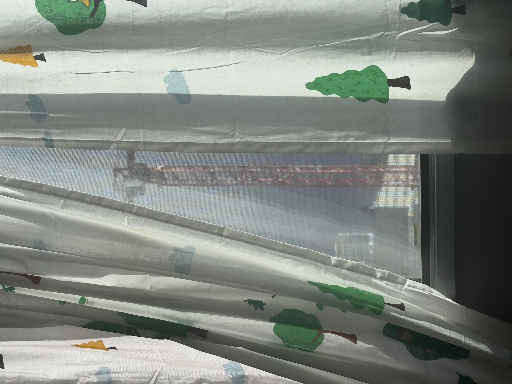
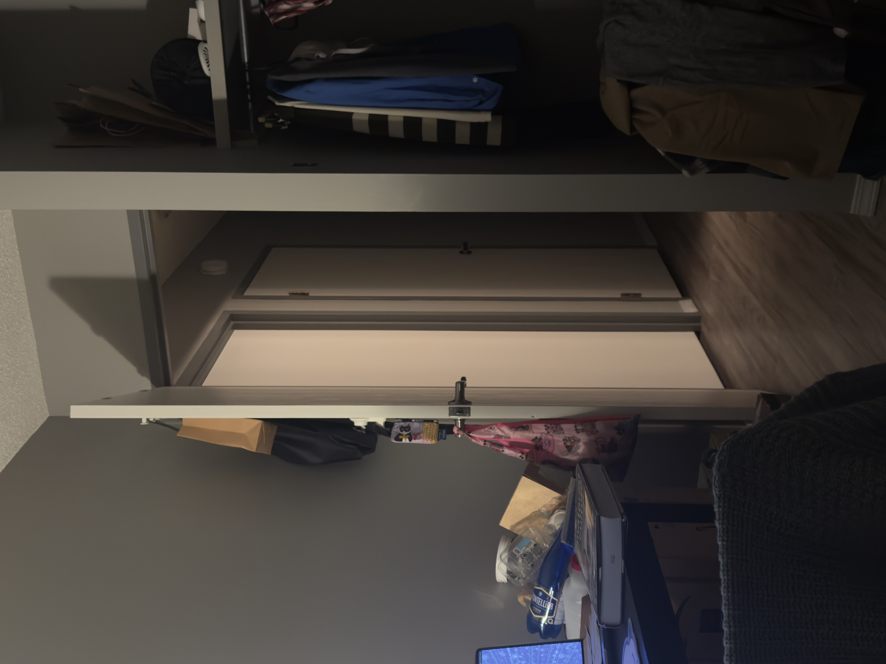
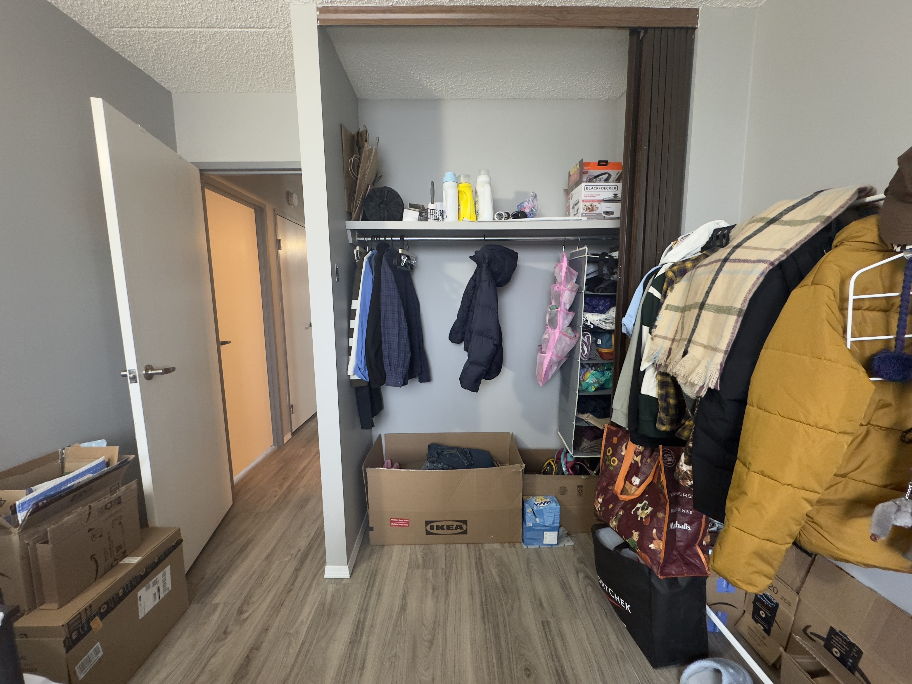
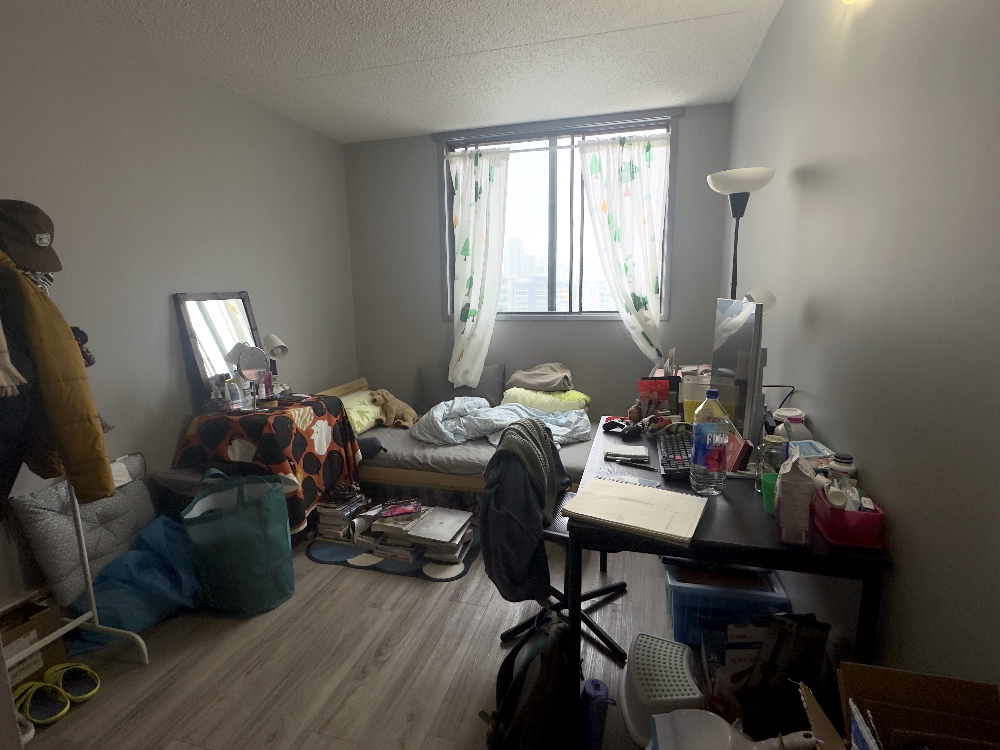

Room A: About to Leave Early?




I decided to live in the apartment with my roommate, whom I didn't know yet at that time before coming here, and we were supposed to stay here for another year until I finish my graduate study. But I hear from her that I either need to move before the summer or at least before the beginning of the fall semester. I then start to get worried about whether I can get a dorm room if I apply now, at the beginning of this year.
One thing that is most frustrating and annoying is, although I promised myself that I will FOR SURE buy and keep less stuff this turn when moving to Calgary, somehow the speed at which I collect, accumulate, and hoard is unimaginably crazy—in the case, which I feel that it seems like the only true exciting and relaxing moments are those when I close the door and stay with my countless items—
in the case, which I feel that it seems like the only true exciting and relaxing moments are those when I close the door and stay with my countless items
(or am I just finding excuses to get away from the study and every other stressful things?)
The last two images are taken for the property manager, so that they can look for new residents to rent. I don't know how I should feel, and how my stuffs feel, though we are still living here, but everything is counting down...